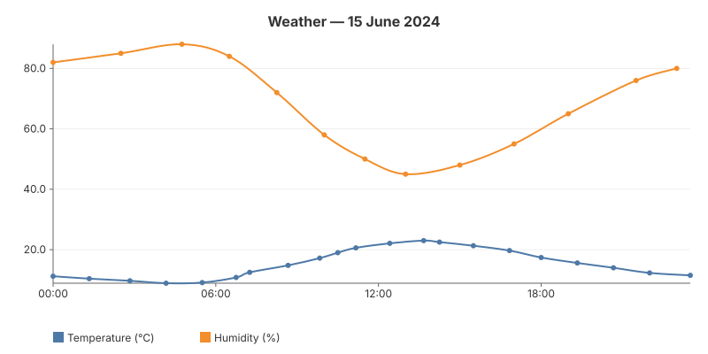

08 — WASM Demo
A full multi-series chart rendered entirely in the browser via WebAssembly. The gogal library compiles to WASM with zero changes — same NewLineChart, Add, RenderString API. No server required.

The WASM entry point
A main_wasm.go file (build-tagged js && wasm) exports a goRender() function that returns SVG HTML. The JS glue calls it once on load.
//go:build js && wasm
package main
import (
"syscall/js"
"codeberg.org/hum3/gogal"
)
func render() string {
chart := gogal.NewLineChart(
gogal.WithVariant(gogal.Static),
gogal.WithTitle("Weather — 15 June 2024 (WASM)"),
gogal.WithGrid(true),
gogal.WithSmooth(true),
)
chart.Add("Temperature (°C)", temp)
chart.Add("Humidity (%)", humidity)
svg, _ := chart.RenderString()
return svg
}
func main() {
js.Global().Set("goRender", js.FuncOf(func(this js.Value, args []js.Value) any {
return render()
}))
js.Global().Call("wasmReady")
select {}
}
Same API, different target — the chart code is identical to server-rendered examples. Only the entry point differs: instead of
Render(w) to an HTTP response, you call RenderString() and return it to JavaScript.
Build tags —
main.go has //go:build !js (server mode) and main_wasm.go has //go:build js && wasm. The Go compiler picks the right file based on GOOS=js GOARCH=wasm.
Building
GOOS=js GOARCH=wasm go build -o main.wasm .
Or via the Taskfile:
task docs:build-wasm
Binary size — a gogal WASM binary is ~2.6 MB. Since gogal has zero dependencies, the binary is mostly the Go runtime. TinyGo could reduce this further (not yet tested).
JavaScript glue
window.wasmReady = function() {
document.getElementById('output').innerHTML = goRender();
};
const go = new Go();
WebAssembly.instantiateStreaming(fetch('main.wasm'), go.importObject)
.then(result => go.run(result.instance));
Running it
Server mode:
task example:08
WASM mode: open docs/08_wasm/demo.html in a browser (needs an HTTP server for WASM loading).